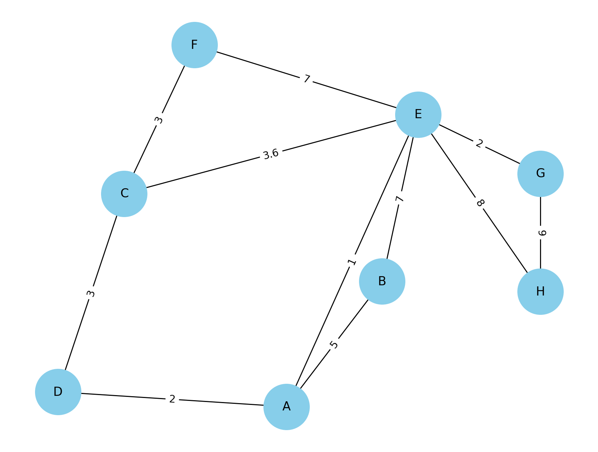

P vs NP Problems
Polynomial-time (P) Problems
Problems where the solution can be found in polynomial time are categorized as P. Examples include sorting, searching, and shortest path algorithms.
Nondeterministic Polynomial-time (NP) Problems
An example is prime factorization, which allows for the verification of a factor of an integer in polynomial time, but no known polynomial time algorithm exists for factorizing a given integer.
P is a subset of NP
The 0/1 Knapsack problem is classified as NP-Complete. It operates in pseudo-polynomial time O(nW), where its complexity becomes exponential when inputs are binary. The dynamic programming solution is linear in the value of W, but exponential in the length of W.
Last Recitation (12)! Friday, April 26, 2024
Question 1
- If the edge weights are all distinct, Prim’s and Kruskal’s algorithm will give the same minimum spanning tree.
- Given an undirected weighted connected graph and a vertex s as source, the pred array at the end of Dijkstra’s algorithm running from s and the pred array at the end of Prim’s algorithm that is run starting from s are guaranteed to be the same.
True. There is one unique MST in this situation.
False. Prim’s selects minimum weights for individual edges, which can result in different pred vertices.
Question 2
Run Prim’s algorithm on the graph starting at vertex A.
Show the shortest and pred arrays.
Question 3
- Finding the edit distance between two strings is a problem that is in P.
- If a problem is solvable using dynamic programming, it is definitely in P.
- To prove a problem is in P, we need to come up with the most efficient algorithm to solve the problem.
True. O(mn), where m is the length of string 1 and n is the length of string 2.
False. Example: 0/1 Knapsack is not in polynomial time, O(n * W) = O(n * 2^k)).
False. As long as it’s polynomial time, it’s considered in P.
Last Lecture! Tuesday, April 30, 2024
P - class of problems with O(polynomial) with respect to input size
Input size conventions
Array — length
Graph — # of vertices, # of edges
String — # of chars
***Single num — log(number)***
NP
NP-Hard
NP-Complete
We know O(nW) algorithm for 0/1 knapsack does not make this problem in P.
Decision Problem
A problem that has a yes/no output
e.g. Hamiltonian path problem
Given a graph undirected, does this graph have a Hamiltonian path (path containing all vertices)?
Optimization Problems
Problems where goal is to maximize/minimize
e.g. shortest path, edit distance, 0/1 knapsack
Note - if we can solve decision problems, we can often use those solutions to solve the optimization version
Consider decision version of 0/1 knapsack
Inputs: given capacity W knapsack
item
weight
value
Decision version asks can we get a value >= V by filling above knapsack
Question: Does solving 0/1 decision help to solve optimization version?
0, 1, 2, ..., K (first no)
Binary search
min 0 or 1
max sum of all values
NP - defined for decision problems in the following manner
Given a YES instance of the decision problem and a certificate of this YES instance, the certificate can be *verified* in polynomial manner.
(A certificate is a string that certifies the answer to a computation.)
DO NOT TRY TO SOLVE AN NP PROBLEM IN EXAM
Question: Show Hamiltonian path problem is an element of NP
Assume we have a graph where there is some Hamiltonian path. Now we are given a certificate of this path as some order of vertices say v1, v2, ..., vn
Now to check that this is a Hamiltonian path
Runtime: In adj matrix check (v1, v2) edge is O(1) time.
In adj list check the whole thing takes O(n+m).
Question: Show decision version of 0/1 knapsack is in NP
input - W
(wi, vi) - weights, values of items
V
Can we get at least value V
Certificate - list of items that were picked to put in bag
Verficiation - check that items do not exceed cap
Sum up values. Check >= V
Claim both checks are polynomial time
Note - problems like 0/1 knapsack are NOT unsolved
How many subsets of a set 2^n
P vs NP
Result: we know P is a subset of NP
Intuition - if you can solve something in polynomial time, then verification in polynomial time is easy.
We don't know if NP is a subset of P. This is unsolved.
We would need to show some NP problem can NEVER be solved in polynomial time (near impossible...)
NP-Hard Problems
A problem Q is an NP-Hard problem iff (if and only if) all NP problems can be solved if this problem Q can be solved formally - all NP problem "reduced to" Q.
(A problem P is NP-Hard if for every problem L in NP, there is a polynomial-time reduction from L to P. This means that if an efficient (polynomial-time) algorithm exists for solving P, then an efficient algorithm can be derived for solving every problem in NP.)
Reduction
subset sum - S = {a1, a2, ..., an} (can be solved by dynamic programming)
target t
Question: does there exist a subset sums up to t
Question: Given set S, does there exist a subset that sums up to exactly half the total summation of S, i.e. can we divide S into 2 equal partitions?